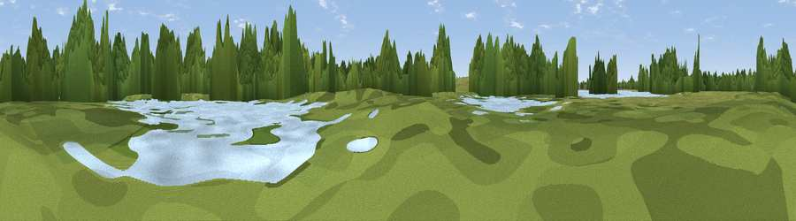

Viewpoint near Hartford
#44867 in England · top 73% of its area beats it · near HartfordThe view, rendered

A 360° render of this exact spot computed from the terrain model, tree cover and land cover — summer colours, afternoon light, calibrated against photographs of famous viewpoints. Real trees, hedges and buildings will differ in detail.
The panorama
Grey silhouette: terrain skyline in each direction (720 bearings, Earth curvature and refraction included). Dashed green: skyline with trees (+15 m) and buildings (+8 m) as obstacles. Blue strip: how far the ground is visible on each bearing.
Where the view opens
Wedge length = distance to the farthest visible ground on that bearing (vegetation-aware). Rings at 10, 25 and 50 km.
What fills the view
34% woodland · 30% grassland · 19% water · 13% cropland · 4% built-up
Angular shares of the visible panorama (visual magnitude), not map area. Landscape diversity 0.63 (0–1 Shannon).
Key numbers
More beautiful places nearby
The staircase of upgrades: each row has a higher view potential than everything closer. Driving times are estimates from straight-line distance, calibrated against real road routing — check an actual route before setting out.
| Place | Direction | Drive | Score |
|---|---|---|---|
| Viewpoint near Hartford | NW · 3 km | ~8 min | 24.0 |
| Viewpoint near Houghton | E · 3 km | ~8 min | 25.7 |
| Viewpoint near Brampton | WSW · 6 km | ~12 min | 35.9 |
| Viewpoint near Sawtry | NW · 14 km | ~26 min | 38.0 |
| Viewpoint near Coton | SE · 21 km | ~35 min | 41.8 |
| Croydon Hill | S · 23 km | ~38 min | 42.7 |
| Orwell Hill | SSE · 23 km | ~38 min | 43.0 |
| Viewpoint near Orwell | SSE · 23 km | ~38 min | 45.6 |
52.32842, -0.14959 · source: osm viewpoint · position refined by local search. Computed location — check access rights before visiting.